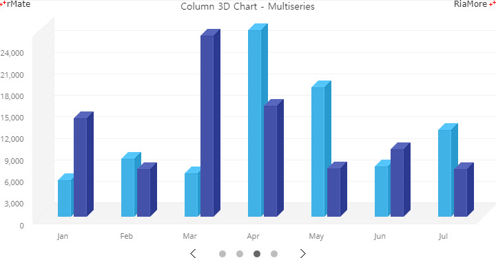
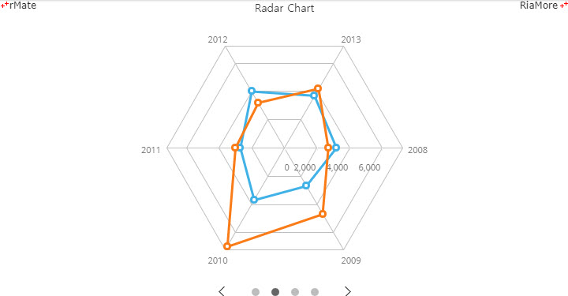

슬라이드 차트
슬라이드 차트는 이벤트 차트와 마찬가지로 하나의 독립적인 차트 유형은 아닙니다.
여러 개의 차트를 하나의 차트로 표현하며, 슬라이드 효과을 위해서 앞으로 가기와 뒤로 가기 버튼이 표시됩니다.
슬라이드 차트의 생성은 다음과 같은 과정을 통해서 이루어집니다.
- 1. 슬라이드로 표현할 차트들을 정하고 각각의 레이아웃과 데이터 셋을 설정합니다. 슬라이드 차트에는 모든 차트 유형이 지원됩니다.
- 2. 설정된 레이아웃들과 데이터 셋들을 각각 배열로 정의합니다.
- 3. 레이아웃 배열과 데이터 셋 배열을setSlideLayoutSet(), setSlideDataSet() 함수로 호출합니다.
- 주의
슬라이드 차트를 생성할 때는 일반적으로 하나의 차트를 생성할 때 호출하는 setLayout(), setData() 함수를 호출하지 않고, setSlideLayoutSet(), setSlideDataSet() 함수를 호출합니다.
다음은 컬럼 차트, 라인 차트, 3D 컬럼 차트, 방사형 차트를 하나의 슬라이드 차트로 생성하는 코드와 이를 이를 적용해서 출력한 차트의 예제입니다.
function chartReadyHandler(id) {
var layout1 = getCartesianLayout("Column2D","Column Chart",["Profit"]);
var layout2 = getCartesianLayout("Line2D","Line Chart",["Profit"]);
var layout3 = getCartesianLayout("Column3D","Column 3D Chart - Multiseries",["Profit","Cost"]);
layoutSet = [layout1, layout2, layout3, radarLayout];
dataSet = [chartData, chartData2, chartData2, chartData3];
document.getElementById(id).setSlideLayoutSet(layoutSet);
document.getElementById(id).setSlideDataSet(dataSet);
}
var chartData = [
{"Month":"Jan","Profit":1100},
{"Month":"Feb","Profit":1400},
...
];
var chartData2 = [
{"Month":"Jan", "Profit":5000, "Cost":13700},
{"Month":"Feb", "Profit":8000, "Cost":6600},
...
];
var chartData3 =
"<items>"
+"<item>"
+"<Month>2008</Month>"
+"<Profit>320</Profit>"
+"<Cost>250</Cost>"
+"</item>"
...;
function getCartesianLayout(type, title, dataField) {
var layout="<rMateChart borderStyle='none'>"
+"<Options><Caption text='" + title +"' /></Options>"
+"<NumberFormatter id='numfmt' useThousandsSeparator='true'/>"
+"<" + type + "Chart showDataTips='true'>"
+"<series>";
var interval = type == "Column3D" ? 1000 : 500;
for (var i=0; i<dataField.length; ++i) {
layout += "<" + type +"Series yField='" + dataField[i] + "' halfWidthOffset='2' displayName='" + dataField[i] + "'/>"
}
layout +="</series>"
+"<horizontalAxis>"
+"<CategoryAxis categoryField='Month'/>"
+"</horizontalAxis>"
+"<verticalAxis>"
+"<LinearAxis interval='" + interval + "' formatter='{numfmt}' />"
+"</verticalAxis>"
+"</" + type + "Chart>"
+"</rMateChart>";
return layout;
}
var radarLayout =
"<rMateChart borderStyle='none'>"
+"<Options>"
+"<Caption text='Radar Chart' fontFamily='Malgun Gothic'/>"
+"</Options>"
+"<RadarChart type='polygon' paddingTop='20' paddingBottom='20' showDataTips='true'>"
...

See the CodePen 알메이트 차트 - 슬라이드 차트
위 예제에서는 getCartesianLayout() 함수를 이용하여 컬럼 차트, 라인 차트, 3D 컬럼 차트 생성을 위한 레이아웃을 작성하고, 방사형 차트 생성을 위한 레이아웃은 radarLayout 변수에 정의합니다.
이렇게 작성된 레이아웃들은 chartReadyHandler() 함수에서 layoutSet 변수에 배열로 정의됩니다.
3 개의 데이터셋이 각각 chartData, chartData2, chartData3 변수에 정의되었고, chartData2 변수는 2 개의 차트(라인 차트, 3D 컬럼 차트)에서 사용됩니다.
데이터셋 변수들은 chartReadyHandler() 함수에서 dataset 변수에 배열로 정의됩니다.
다음은 각 차트가 표시될 때 애니메이션 효과를 보여주는 슬라이드 차트의 예제입니다.

See the CodePen 알메이트 차트 - 애니메이션 효과가 적용된 슬라이드 차트